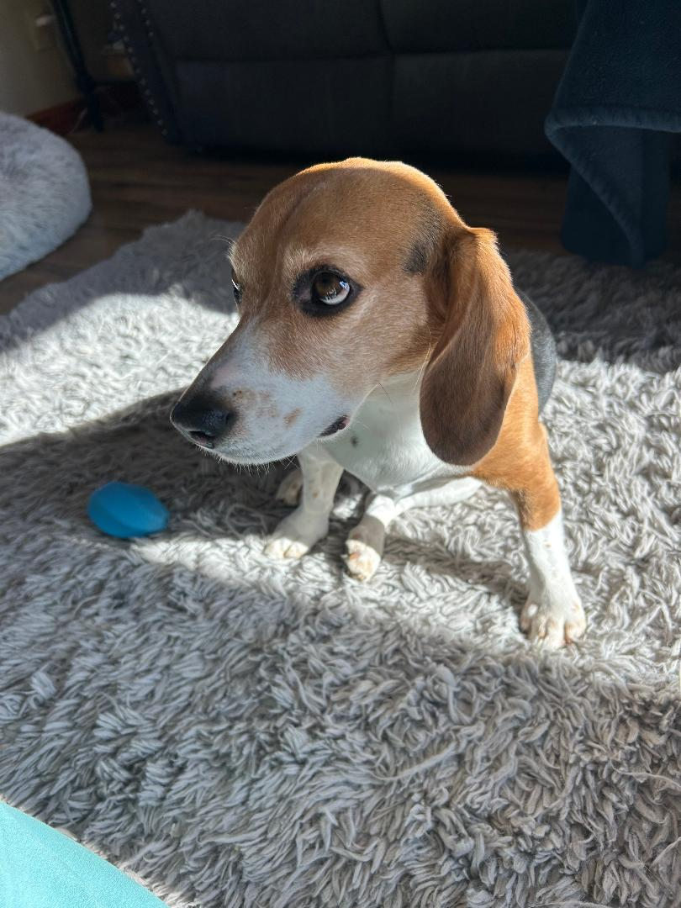

Beagles

Beagles are friendly, curious, and merry dogs known for their excellent sense of smell and tracking instincts. Originally bred for hunting small game, they make wonderful family pets thanks to their gentle and affectionate nature.
Breed Characteristics
- Energy Level: Moderate — they enjoy walks and playtime.
- Temperament: Gentle, loving, and sociable.
- Training: Intelligent but easily distracted by scents.
- Size: Small to medium.
- Lifespan: 12–15 years.
Fun Facts
- Beagles have one of the best noses in the canine world.
- They were a favorite breed of Queen Elizabeth I.
- Beagles are often used as detection dogs at airports.
Meet Harper
Harper is our three year old Beagle. We rescued Harper from a beagle breeder. Harper was not good enough to hunt, therefore, she was neglected. She is our angel and we are thankful everyday we rescued her.
